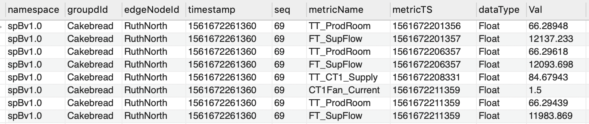

Entity Type Configuration
In Watson IoT Platform Data Lake, the device data for different entity/device types are stored in
their own table. The tables are named as IOT_<entityType>. The configuration items that
controls data extraction for a specific entity type from SCADA historian, transform and map into
required format and upload to Watson IoT Platform Data Lake, are defined in a configuration file
<InstallRoot>/volume/config/<entityType>.json.
The configuration items are provided to handle two use cases.
-
Each record in SCADA historian table represents one event from a device. 
-
Each record in SCADA historian table represents all events from a device.

Configuration Object
Provide data configuration object in a json formated file:
{
"client": "string",
"database": {
"sqlStatement": "string",
"fetchSize": integer,
"insertSize": integer,
"scanInterval": integer
},
"tagData": {
"tagpath": "string",
"tagpathParseCount": integer,
"tagMap": {},
"eventTagLevel": integer,
"eventColumnName": "string"
},
"entityData": {
"deviceType": "string",
"deviceId": "string",
"deviceIdPrefix": "string",
"deviceIdFormat": "string",
"registerDevice": true|false
},
"eventData": {
"timestamp": "string",
"id": "string",
"type": "string",
"value": "string",
"consolidateTimestamp": true|false,
"ignoreTypes": [],
"registerInterfaces": true|false
},
"discardColumns": [],
"renameColumns": [],
"interfaceEvents": {},
"interfaceRequired": [],
"mqttEvents": integer
}
Where:
client: Defines the name of the customerdatabase: Specifies database related configuration items to extract and upload datasqlStatement: Specifies custom SQL statement to extract entity data from SCADA historianfetchSize: Specifies chunk size for data extractioninsertSize: Specifies batch insert sizescanInterval: Specifies interval in seconds to scan for new data in SCADA historian
This page is still under construction